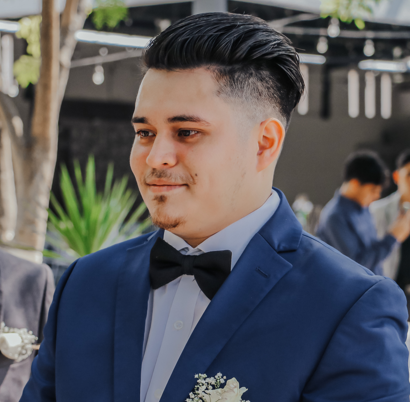

Abraham López

A little bit of me
Hi, I'm from Mexico. I consider myself a patient, and honest man.
I love sports, especially soccer. I used to live in Texas(US), back in 2003;
I lived there for 6 years. And now I live in Mexico, and recently married, thanks to God.
Furthermore, I really see myself growing in this web developer career,
specially becoming a backend programmer.
Education
Schools
- Elementary Education
- Javier Antonio Machado
(MEX)
- Bell Air Elementary School
(USA)
- Junior High
- Central Jr High School
(USA)
- Escuela Tecnica 46.
(MEX)
- High School.
Courses
- ITEDIM (MEX)
- Adobe; Illustrator, Photoshop, InDesign, After effects & PremierPro.
- HTML, CSS, & JavaScript.
- CorelDraw, Blender.
- Photo and Video editor.
- UDEMY (ONLINE)
- Web Developer 2.0.
(ESP)
- Digital marketing.
(ESP)
- 7 Day Code Challanges.
(ING)
- The Complete 2023 Web Development Bootcamp.
(ING-Active)
Work experience
Companies
- Virgin Mobile. (MEX)
- Enlaces Publicitarios (MEX)
- Graphic and Mockup Designer
- Costumer Service
- MacStore|Apple Premium Reseller. (MEX)
- Prodeco
- Graphic Designer
- Wordpress Developer
- As Freelancer
- Graphic Designer
- Wordpress Developer
Skills
Apps & softwares
- Adobe Photoshop, Illustrator, & Express.
- Visual SC, Brackets & Notepad++.
- Wordpress and Elementor.
- Windows and Mac Os.